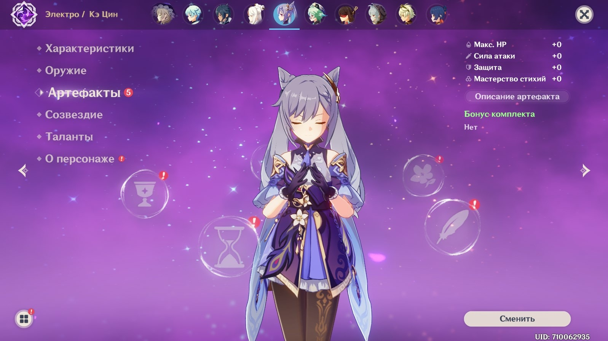

Артефакты
Артефакты
— это экипируемое снаряжение, повышающее характеристики персонажей.
Существует пять слотов артефактов разного типа: Цветок жизни, Перо
смерти, Пески времени, Кубок пространства, Корона разума. Экипировка
определенного количества артефактов из одного набора активирует бонусы
комплекта артефактов.
Одномоментно в инвентаре может
находиться до 1500 артефактов. По достижении лимита попытка собрать
больше артефактов вызовет всплывающее предупреждение